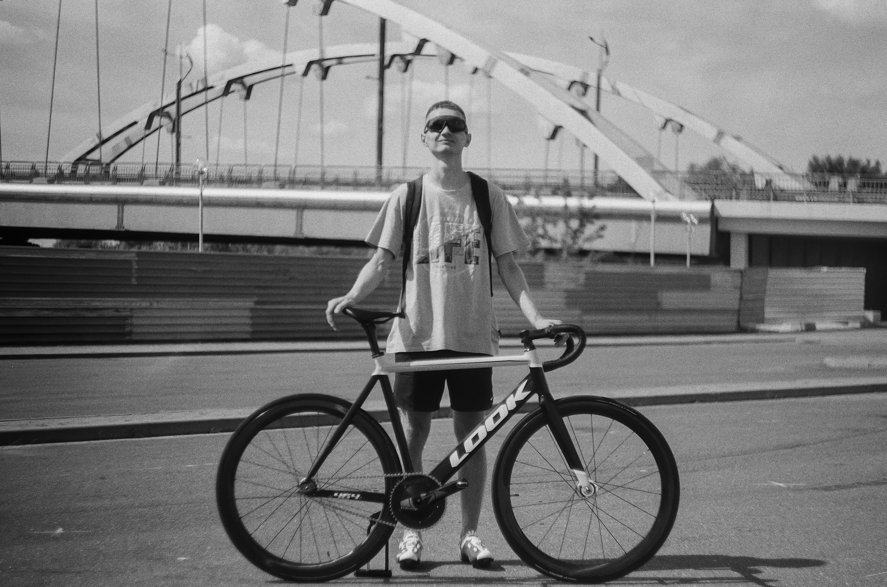

Примеры плёночных фотографий
Opel Vectra и ColorPlus 200
Вы когда-нибудь задумывались какой носитель наоболее точно хранит данные о Вашей фотографии? Спешу удивить, что это самая обычная, казалось бы уже устаревшая плёнка 35 мм, которая казалось бы не имеет места на существование в современном мире, однако ее вытеснили цифровые носители информации только лишь из-за простоты процесса получения кадров и удобства использования, но речь не об этом.
Давайте рассмотрим и разберем несколько моих пленочных снимков автомобилей.

Эта фотография расскрывает в полной мере все, за что сейчас любат плёнку, а именно теплые цвета, где-то блик, где-то пересвет. Казалось бы фотография имеет деффекты, но они же и придают шарма, придают фотографии жизни и естественности.
Это фото было сделано абсолютно спонтанно во время съемки автомобиля на цифровую камеру, локация непримечательна, но погода и свет на улице круто сделали свою работу.
В данном случае была использована плёнка Kodak ColorPlus 200, которая одновременно имеет и хорошее ненадоедливое зерно, и достаточную для таких условий светочувствительность. Тут удалось "убить двух зайцев", а именно хорошо проэкспонировать кадр без лишних шумов.
К данной плёнке мы ещё вернёмся, так как она является моим фаворитом среди всех цветных негативных плёнок.
BMW 3 и Portra
Следующая фотография была сделана в не самых благоприятных для фотографии условиях: легкий туман, мало света. Однако опять же, как и в прошлом случае, всё это сыграло только на руку

Темный автомобиль и мрачная погода, как по мне идеальное сочетание для хорошего кадра. Однако всё могло бы быть хорошо если не один просчёт, который допускают начинающие фотографы или я, который просто поспешил и никак не поменял настройки фотоаппарата перед спуском затвора. Внимательные читатели уже заметили, что часть машины резкая, а часть вовсе нет. Всё это произошло только лишь потому что я открыл диафрагму на максимум ее диапазона, то ли для того, чтобы получить больше света, то ли забыл поменять её после прошлого кадра. Но факт остаётся фактом, для этого я и пишу об этом, чтобы разобрать свои ошибки и успехи и показать Вам как делать надо, а как лучше не стоит.
Плёнка в данном случае использовалась Kodak Portra 160, которая не подходит под такие условия от слова совсем, потому что как минимум она рассчитана на хорошее количество естественного солнечного света. Этот нюан сделал фотографию холодной и синевато-зеленой, что конечно можно поправить цветокоррекцией, но это не наш вариант. Фотографировать надо не с надеждой на дальнейшую обработку, а с надеждой на минимальные коррекции кадра.
Look и Fomapan
Если у фотографа спросить совет какую плёнку стоит первым делом попробовать для фотографии, он скажет: "чёрно-белую". А если уточнить какую чёрно-белую, ответ будет: "Fomapan".

Черно-белая плёнка с одной стороны может простить некоторые огрехи фотографа, такие как цветные блики, простота цветокоррекции. Однако несмотря на это имеет меньшую популярность чем цветная негативная. Благодаря меньшей популярности среди фотографов стоимость этой плёнки как правило на порядок ниже, чем стоимоть цветной плёнки.
Давайте теперь разберем полученный кадр.
Фотография отлично проэкспонирована, имеет хорошую резкость и контрастность. Всё это благодаря сканированию в высоком разрешении и последующей коррекцией цвета.
Локация подобрана удачно, погода солнечная, значит света, которого будет достаточно для кадра, хватает. Немаловажную роль сыграл клиент, который смог органично встать в кадре со своим велосипедом и не постеснялся сфотографироваться, хоть это и не было запланировано.